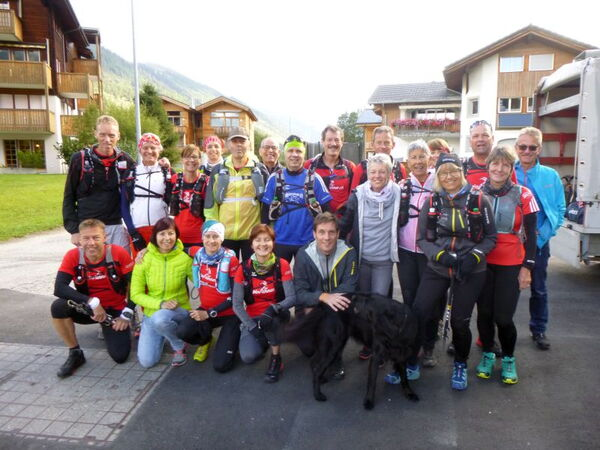

Erlebnistage Quellenlauf
Vier Quellenlauf Ticino und Rhone

Nach dem eindrücklichen Quellenlauf im 2016 zu den Quellen Rhein und Reuss (zum Bericht 2016) folgt nun der zweite Teil des Vier-Quellenweges. Wir starten auf dem Gotthardpass, laufen auf schönem Höhenweg im Val Bedretto bis zum Nufenenpass zur Quelle des Ticino. Nach schönem Abstieg erreichen wir Ulrichen im Goms wo wir Übernachten werden. Am nächten Tag laufen wir zum Furkapass wo wir auf den Rhonegletscher stossen und die Quelle der Rhone. Parallel der Furka Dampfbahnstrecke erreichen wir unser Ziel in Realp.
Bericht vom Quellenlauf 2017 Samstag
Bericht vom Quellenlauf 2017 Sonntag
Programm
Samstag: ab 8.45 Uhr Gepäckaufgabe beim Bahnhof in Hospental, 9.20 Uhr Abfahrt mit Postauto nach Gotthard Passhöhe. Information und Start zur ersten Etappe Val Bedretto - Quelle Ticino - Nufenenpass - Ulrichen 34 Km +1300 /-2000 hm zur Strecke SchweizMobil
ca. 16.00 Uhr Ankunft in Ulrichen, kleines z'Vieri, Zimmerbezug Hotel Walser, 19.00 Uhr Nachtessen
Sonntag: 8.45 Uhr Gepäckaufgabe, 9.00 Uhr Start zur zweiten Etappe Oberwald - Furkapass - Quelle Rhone - Furkapass- Realp 30 Km +1600 /- 1400 hm zur Strecke Schweiz Mobil
ca. 15 Uhr Ankunft in Realp, kleines z'Vieri, individuelle Heimreise
Teilnehmer
- Marco & Petra Jäger
- Brigitte Eggerling
- Thomas Tscharner
- Röbi & Maria Conrad
- Ursula Baer
- Peter & Bea Altmann
- Joschi Furrer und Nartano Kottmann
- Barbara Schuler
- Chrigel & Bea Hernach
- Doris Schwarz
- Micheline Pang
- Martin und Jsabella Lüönd
- Dani Ulrich
- Michel Zogg
- Jean-Marie Zogg